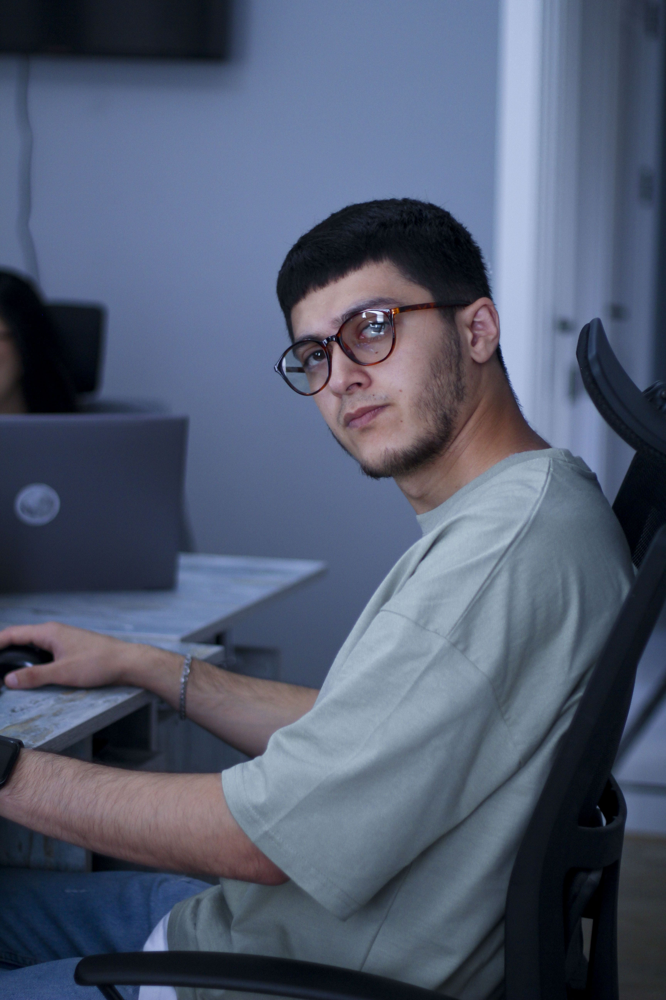

<ion-header no-shadow>
  <ion-toolbar class="main-toolbar">
    <ion-buttons slot="start">
      <ion-menu-button>
        
      </ion-menu-button> 
    </ion-buttons>
    <ion-avatar slot="end" (click)="goToSetting()">
      
    </ion-avatar>
  </ion-toolbar>
</ion-header>